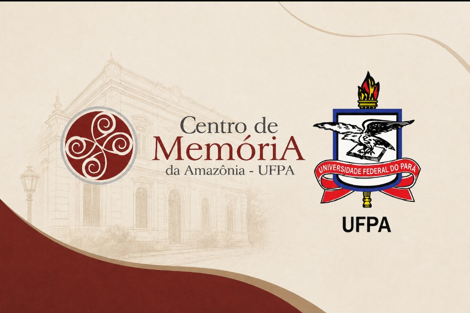

Salvaguarda, restauração e difusão do patrimônio judiciário e histórico da nossa Amazônia.

Documentação originária do atual Tribunal de Justiça do Estado do Pará, do final do século XVIII até o ano de 1970, salvaguardada pelo Centro de Memória da Amazônia (CMA) desde o ano de 2007. Consistem em sua maioria de documentos cíveis e criminais, divididos em diferentes procedências. Com o avanço do trabalho dos bolsistas do CMA, os instrumentos de pesquisa desse acervo são periodicamente atualizados.
O Centro de Memória da Amazônia é um órgão suplementar subordinado à Reitoria da Universidade Federal do Pará (UFPA), instituído através da Resolução CONSUN Nº 662/2009.
Travessa Rui Barbosa, 491 (Reduto, Belém/PA) — em prédio histórico neoclássico que abrigou a antiga gráfica da Imprensa Universitária.
Criado via Convênio Nº 005/2007 (UFPA e TJE-PA) para salvaguardar processos cíveis e criminais (1785–1970) da justiça paraense.
Acesse os certificados e fotos de cursos, oficinas e palestras ofertados pelo CMA organizados por evento.